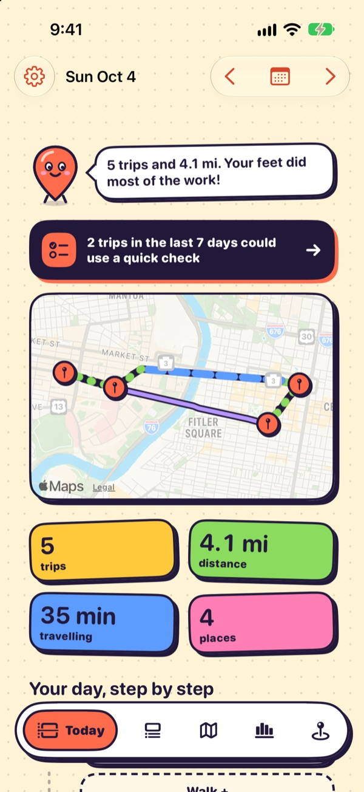

Products
Tools you can use today.
HHT Diary is the organization; its products are the things you install and run. There is one so far, and it shares an open engine and data format with anything that comes later.
iPhone · iOS 17 or later
TripLibre for iOS
A private travel diary that fills itself in. It records where you go in the background, rebuilds each day into visits, trips and modes, lets you fix it in a tap, and exports the result. Free, open source, and nothing leaves the phone unless you export it.


Shared foundation
HHTCore
The Swift package behind the app: collection, inference, corrections and export. It is the part any future HHT Diary tool would reuse, so that data from all of them can be analysed the same way.
What's next
No other products are promised
Ideas such as a research edition, Android or analysis tools are tracked on the roadmap with Planned or Exploratory labels. They are not products until they ship.